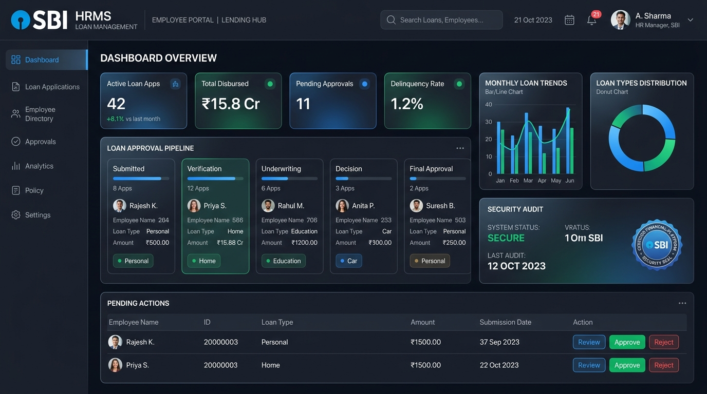

Webito Infotech • Banking Sector
Nov 2025 – Present
State Bank of India: Loan Lifecycle & Employee Management Engine
Architected a mission-critical Loan Management and Employee Life Cycle microservice from the ground up for State Bank of India (HRMS Dept). Replaced a manual, paper-based workflow with an automated multi-level approval pipeline.
1 Lakh+
Workforce Covered
~30%
Turnaround Reduction
Zero
ISD Audit Defects
- Engineered RESTful API integrations connecting internal loan workflows to external review systems, cutting turnaround by ~30%.
- Hardened API data security handling sensitive employee records, passing Information Security Department (ISD) audits with zero repeat critical findings.
- Optimized SQL Server query performance, slashing execution times by 40% (from ~5s to ~3s on key high-volume reports).
